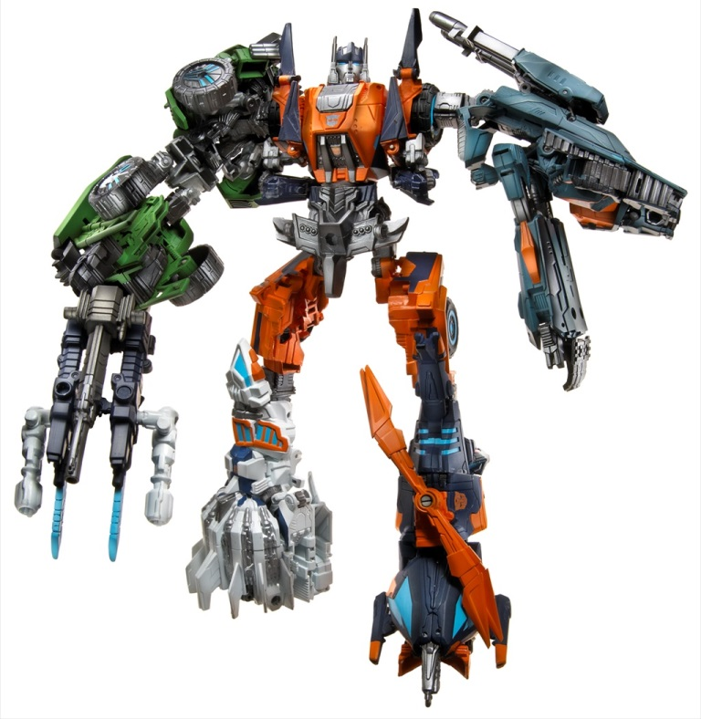
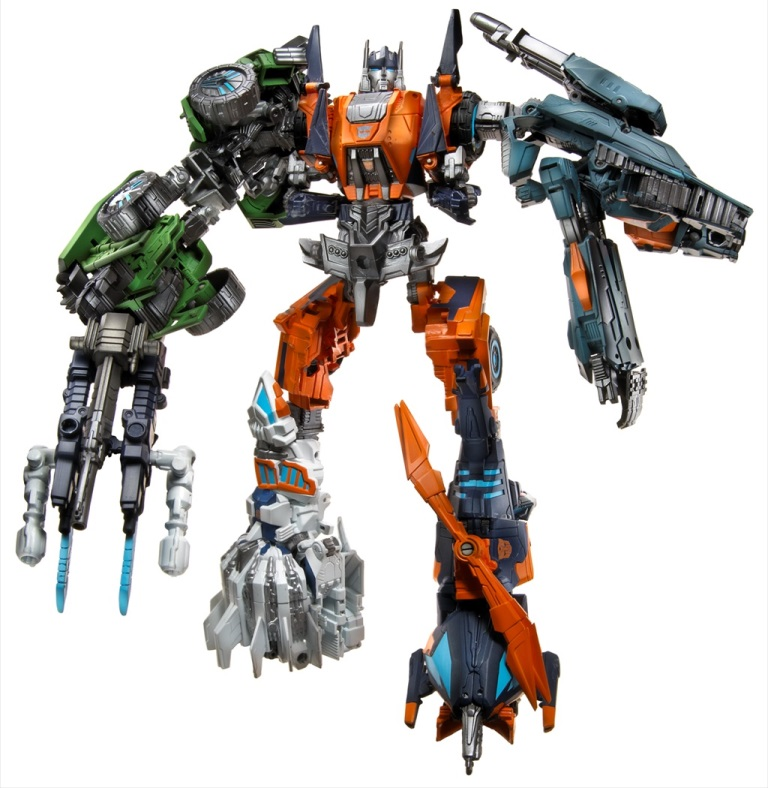

Difficulty of Transformation : Hard
Rating : 6.9
(NOTE: Because this is a repaint, this is not a full-blown review. This mainly covers any changes made to the mold and the color scheme, and merely compares it to Generations FoC Onslaught. For a review on the mold itself, read the review of Generations FoC Onslaught here .)
At long last, the Wrecker
leader for part of the Marvel and IDW comics run gets his own toy! Granted,
it's for a form we've never seen before (he wasn't in the
Fall
of Cybertron game
), and it's a remold of another character, but the
general vehicle mode fits. However, the rest of the FoC Wreckers have a
sort of "dual homage" thing going on, with their general alt modes and
heads based off the G1 Wreckers, but the color scheme loosely based off
of the Robots in Disguise (2001) Commandos that form
Ruination
(which is what these Wreckers' combined form is also named). However, for
Impactor... well, his color scheme definitely isn't based off of
Mega-Octane's
.
It's more of an "inverse" of what his colors have been in the comics--
namely, orange is the main color, with purple and various shades of gray
forming his other colors. The purple and orange look really striking together,
and make for quite the attractive color scheme on what is a pretty unattractive
mold. The dark brownish gray forms a decent "neutral" color for the others
to play off, but the light milky gray, as always, is pretty blah-- thankfully,
the latter is only used in a few minor places. The light blue highlights
on the wheels, eyes, and a few other places help Impactor fit in a bit
more with the "Fall of Cybertron" aesthetic, given how big of a part the
"glowing Energon lines" are for the game's look. Impactor's certainly not
at want for paint apps-- he's got several all over, so there's no large
area that's simply one color. In addition to an Autobot symbol, he's also
got a Wrecker symbol on his chest, which is another neat nod to his history--
though I wish it wasn't in that light blue, as against the orange it's
a little harder to pick out visually than it should be. However, the elephant
in the room in this-- Impactor SHOULD be mostly purple with orange highlights
instead of visa versa, given that that's how he's ALWAYS been colored up
to this point. Hasbro has apparently said that they don't want to do a
mostly-purple Autobot since that might confuse kids given how much purple
is associated with Decepticons, but still.. especially for the character's
first official toy outing, it doesn't look enough LIKE Impactor with this
reversed color scheme.
Impactor has a few mold
changes-- the most obvious is his weapon, which is now a large spring-loaded
missile launcher that fires a harpoon-like projectile. This is a nod to
how he's traditionally been depicted, with a harpoon-style weapon in place
of one of his hands. The headsculpts are also both new. Impactor's looks
great, is pretty much spot-on accurate to his comics appearances (colors
aside), and the slight sneer works perfectly with his personality. His
combined head sculpt has been changed too-- which I'll get to in just a
minute...
FoC Impactor has a quite
attractive, nice color scheme, a good number of paint apps, excellent headsculpts,
and a pretty nice new weapon. However, that said, the mold itself is still
as bad as ever, and no color scheme-- no matter how good-- is going to
change that. Plus, the decision to reverse Impactor's colors baffles me.
Make the character or don't-- doing it halfway just doesn't sit well with
me, and as Impactor this toy is a definite disappointment.
 Ruination
(FoC) (Combination of Impactor, Autobot Whirl, Roadbuster, Autobot Topspin,
and Twintwist)
Ruination
(FoC) (Combination of Impactor, Autobot Whirl, Roadbuster, Autobot Topspin,
and Twintwist)

Difficulty of Transformation
: Hard
Rating
: 6.9
Ruination is one weird
mish-mash of combiner ideas. He's a partial color-homage to Robots in Disguise
Ruination, though his components are Wreckers that never combined but now
do. And the face? It's meant to be Emirate Xaaron, who commanded the Wreckers
in certain portions of the Marvel comics. It's a pretty nice headsculpt,
and captures Xaaron's weird "three-gap mouth" quite well-- though it's
not colored like Xaaron, who is mostly gold and silver. The antennae on
the head are also a bit longer than Xaaron's, emulating most combiners'
long antennae. The actual color scheme itself is typical combiner fare--
Ruination is clearly made of five different robots combined together, which
each limb being a different major color. However, there are a few colors
that unify the whole scheme. Orange is the most obvious, particularly since
the central body component is mostly that color. There's also a lot of
the dark milky brownish gray, particularly if you use Ruination's extra
weapons, though since it's a more neutral color it fades into the background
a bit. For accent colors, there's a bit of light blue on all of the components
as well, which I particularly like since it emphasizes the whole "War for
Cybertron/Fall of Cybertron" aesthetic schtick of having light "Energon
conduits" throughout every design. Ruination can wield that weird weapon
that combines all of FoC Bruticus' weapon parts, but he can also wield
the additional, larger weapons that each of his component Wreckers come
with. The only problem is, there isn't really any sort of configuration
that they combine into that remotely resembles one larger weapon. You just
kinda...
peg all the weapons together using the various pegs and ports and hope
it doesn't fall apart (it's going to look unwieldy no matter what).
Beyond the different
head and new weapons, Ruination has no mold changes compared to FoC Bruticus.
His limbs can swap just like Bruticus', though unlike his predecessor,
Ruination's "default" configuration shown on the box is as pictured above--
with Roadbuster and Twintwist as the arms, and Whirl and Topspin as the
legs.
FoC Ruination is an
interesting idea, but it seems like Hasbro wanted to do too many things
with it and couldn't settle on one. Wrecker homage? RiD Ruination homage?
Emirate Xaaron homage? Hasbro puts all of these in, but never really settles
on any one of them enough to make the set "click" enough on the nostalgia
factor for any of them. If you like the way it looks, by all means get
the set of five-- but as far as homages to individual characters, it will
likely disappoint a good majority of fans in terms of a bonafide "update"
for any of them.
No Stats
Reviews by Beastbot
(Pics from Hasbro. )